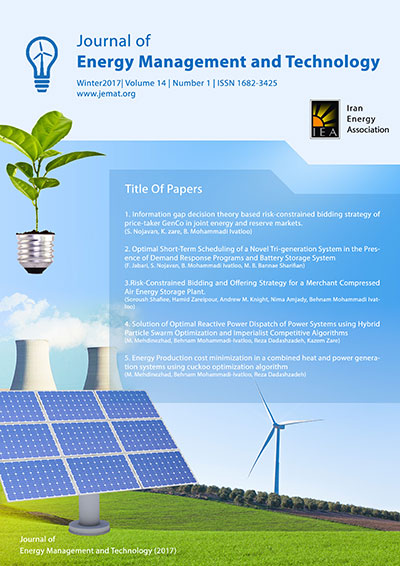
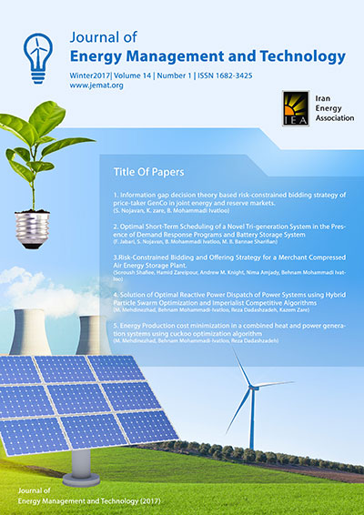
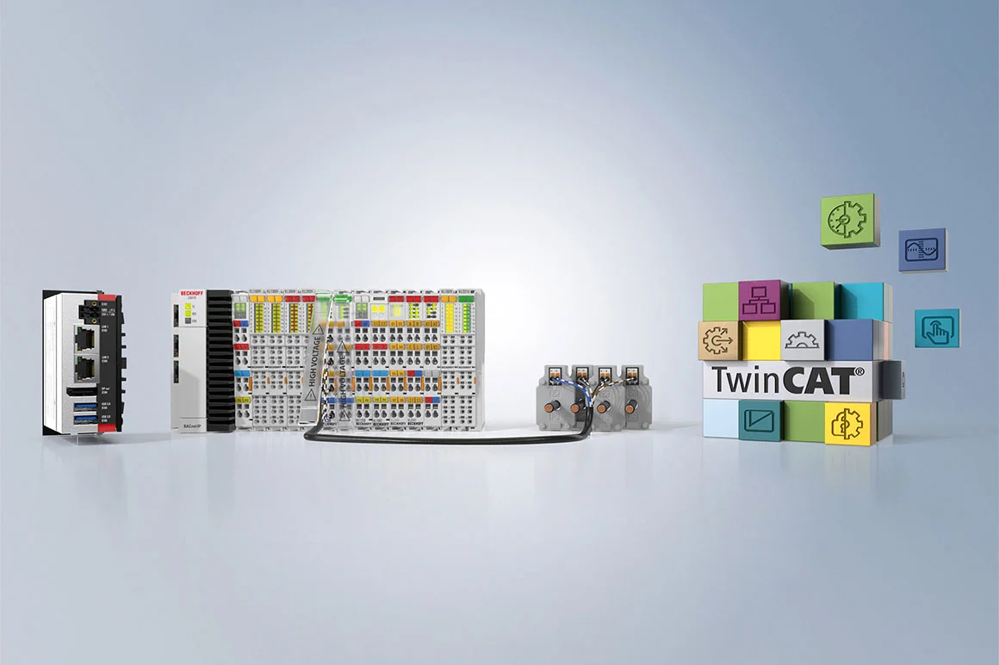

Article 1: Implementing Energy Management System?
published in october 2024 by J.frank
to Increase Energy Efficiency in Manufacturing Companies...
 read moredivertised articles
published in october 2024 by J.frank
to Increase Energy Efficiency in Manufacturing Companies...
 read morePublished by Mohsen Khaleghi
top-down switching, centralized optimization, price reaction, and transactive control in a distribution-level energy management system...
 read morePublished in Octobre 2024 by Mansour Ojaghi
The main focus of JEMT will be: New technologies for energy generation, planning, and scheduling; Energy analysis, modeling and prediction; Energy conservation and efficiency...
 read more
read more